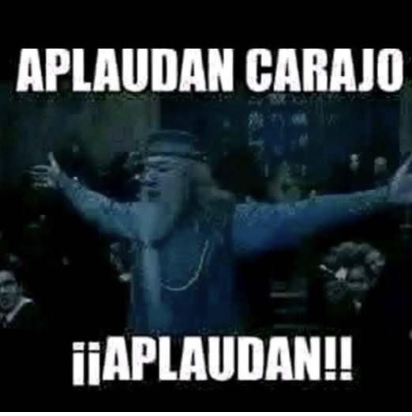
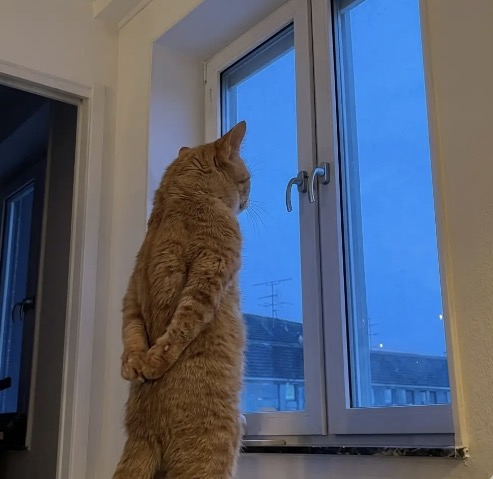

Here are some thoughts about my professional and emotional life lately.
This past couple of months, I've had more free time than usual (thank god). I dedicated this time to do things I usually don't do, or forgot to do. I believe something like this happened to me during the pandemic.
Looking for a job and deciding what to do with my professional life was my first priority in my free time.
But there's something wrong in society with having that much free time, being jobless looks bad on everyone, and specially when you're in your late 20s.
And yes, I felt the pressure. But I started finding a reason to not work. Which led me to volunteer in Tepoztlán for a month. Then I traveled for a bit in Mexico City, I came back, visited my aunt in Tijuana for like 2 weeks, and here I am in my hometown again after 2 months of not being here.
I knew how coming back to my hometown without a job would feel like. So instead of letting the disappointment affect me, I tried to stay creative doing something productive to keep me sane.
So, besides applying for jobs, here's what I apparently decided to do with my life:
- Expanding my music library: I tried getting more recs online.
- Visited my grandma more often.
- Went to coffee shops.
- Weekends I stayed busy visiting my old friends.
- Played a few old videogames.
Basically, I am living a cheap and relaxed life, not going out as much as before though. Obviously I had to become very conscious to not spend the money I had left.
And I even noticed a real change in my physique just by not eating whatever I wanted on the street. I think that's a positive cause I dropped some weight doing that lol.
I compared this version of myself to the one I was 6 years ago in the pandemic. I think the biggest change here is my mood. I am really positive today compared to how I was back then.
And honestly, I think I like this phase of my life very much. Even though I know is transitional, and I'm not where I want to be right now, it made me grow exponentially. And I really like that. I think 2 years ago I would've gone crazy if I thought of not working for like 3 months. But now, I think it was really necessary.
Up until today, I landed a new job that I'll start in September. Not sure how it'll go but its cool to have something at least for now haha.

Being emotionally aware...
Emotionally I feel reset. I even dedicated a short period of time to know someone I was really interested in. Things didn't work out as I thought it would - I credit that to the distance and personal situations.
Regardless, I had these thoughts of thinking it would've worked if I continued trying. But I respected her decision. So, I tried using that for motivation on continuing doing this, and gave her space.
I guess the positive side on this, was that it was really a long time without feeling something like that for me. I was scared first, I thought maybe I idealized this person, but for some reason that fear was keeping me from letting myself feel those emotions. And when I let that out, damn it felt good - even if it was for a short period of time, I loved every conversation with that person, and sharing how I felt. This reminded me that I can still love someone.
Maybe that's the lesson I took from it. To not be so afraid of loving someone just because you don't know how it'll end. And I'm open to learn more lessons about life from now on.
And like one of my real ones (mi compa Tadeo Tapia) said to me while drinking a few days ago... we're here to experience feeling every emotion. Good or bad.
You lose a lot of potential experiences not sharing your love. Go ahead and try, get hurt, get in love, learn from it. That's the beauty in life.
Just don't forget to love yourself first.
What comes next
Moving forward, I expect a few changes in my habits. After I start this job, I'd like to continue my goal of traveling more.
But who knows... maybe something changes with time. We'll see 😊

Say something back
thoughts, opinions, recommendations, whatever comes to mind.